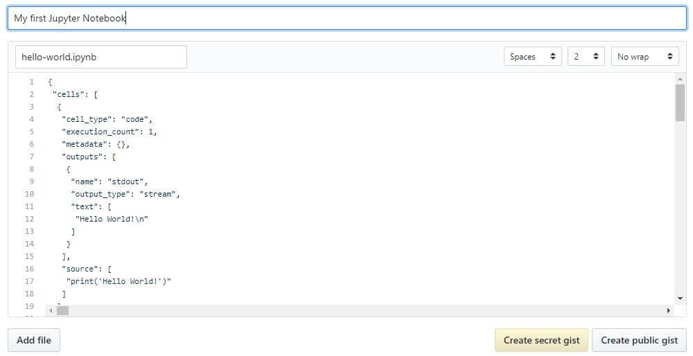

Когда люди говорят о совместном использовании своих ноутбуков, обычно они рассматривают две парадигмы. Чаще всего люди разделяют конечный результат своей работы, что означает обмен неинтерактивными, предварительно отрендеренными версиями своих ноутбуков; однако также существует возможность совместного использования ноутбуков с такими вспомогательными системами контроля версий, как Git.
Так же, в интернете появляются новые компании, предлагающие возможность запуска интерактивных Jupyter Notebooks в облаке.
Общий блокнот будет отображаться точно в том состоянии, в котором он находился при экспорте или сохранении, включая вывод любых ячеек кода. Поэтому, чтобы обеспечить совместимость вашего ноутбука, так сказать, есть несколько шагов, которые вы должны предпринять, прежде чем им делиться:
Это гарантирует, что ваши записные книжки не будут содержать промежуточный вывод, не будут иметь устаревшее состояние и будут выполнены в порядке на момент публикации.
Jupyter имеет встроенную поддержку экспорта в HTML и PDF, а также в некоторые другие форматы, которые вы можете найти в меню «File> Download As». Если вы хотите поделиться своими записными книжками с небольшой частной группой, этой функция будет достаточно. Но если совместного доступа к экспортированным файлам будет не достаточно, есть также несколько чрезвычайно популярных методов совместного использования файлов .ipynb в Интернете.
Поскольку к началу 2018 года количество общедоступных ноутбуков на GitHub превысило 1,8 миллиона, это, безусловно, самая популярная независимая платформа для обмена проектами Jupyter со всем миром. GitHub имеет встроенную поддержку рендеринга файлов .ipynb непосредственно как в репозиториях, так и в списках на своем веб-сайте. Если вы еще не знаете, GitHub – это платформа для размещения кода для контроля версий и совместной работы для репозиториев, созданных с помощью Git. Вам понадобится аккаунт, чтобы воспользоваться их услугами (стандартные аккаунты бесплатны).
Если у вас есть учетная запись GitHub, самый простой способ поделиться записной книжкой через GitHub на самом деле вообще не используя Git. С 2008 года GitHub предоставляет сервис Gist для размещения и совместного использования фрагментов кода, каждый из которых имеет свой собственный репозиторий. Чтобы поделиться блокнотом с помощью Gists:
Это должно выглядеть примерно так:

Если вы создали общедоступную Gist, теперь вы сможете поделиться ее URL-адресом с кем угодно, а другие смогут fork and clone вашу работу.
Создание собственного репозитория Git и распространение его на GitHub выходит за рамки данного руководства, но GitHub предоставляет множество руководств, которые помогут вам освоить его самостоятельно.
Дополнительным советом для тех, кто использует git, является добавление исключения в ваш .gitignore для скрытых каталогов .ipynb_checkpoints, которые создает Jupyter, чтобы избежать ненужной фиксации файлов контрольных точек в вашем репо.
К 2015 году NBViewer стал самым популярным средством рендеринга ноутбуков в Интернете. Если у вас уже есть место для размещения ваших ноутбуков Jupyter в Интернете, будь то GitHub или где-либо еще, NBViewer отобразит ваш блокнот и предоставит совместно используемый URL-адрес вместе с ним. Предоставляется как бесплатный сервис в рамках проекта Jupyter, он доступен по адресу nbviewer.jupyter.org.
Первоначально разработанный до интеграции GitHub с Jupyter Notebook, NBViewer позволяет любому вводить URL-адрес, идентификатор Gist или имя пользователя/репозиторий/файл GitHub, и он отображает блокнот в виде веб-страницы. Идентификатор Gist – это уникальный номер в конце URL; например, строка символов после последнего обратного слеша в https://gist.github.com/username/50896401c23e0bf417e89cd57e89e1de. Если вы введете имя пользователя GitHub или username/репо, вы увидите минимальный файловый браузер, который позволит вам просматривать репозитории пользователя и их содержимое.
URL-адрес, отображаемый NBViewer при отображении записной книжки, является константой в зависимости от URL-адреса записываемой записной книжки, поэтому вы можете поделиться этим с кем угодно, и он будет работать, пока исходные файлы остаются в сети.
Начав с основ, мы познакомились с естественным рабочим процессом Jupyter Notebooks, углубились в более продвинутые функции IPython и, наконец, научились делиться своей работой с друзьями, коллегами и миром. И мы сделали все это из самой записной книжки!
Если вы хотите получить вдохновение для своих собственных ноутбуков, Jupyter собрал галерею интересных ноутбуков Jupyter, которые вам могут пригодиться, и на домашней странице Nbviewer есть ссылки на действительно интересные примеры качественных ноутбуков.
Оригинальная статья: Jupyter Notebook for Beginners: A Tutorial.